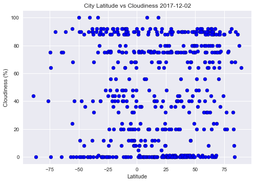
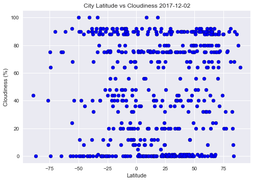

The purpose of this project is to analyze how weather changes as one get closer to the equator. To accomplish this analysis, we first pulled data from OpenWeatherMap API to assemble a dataset of over 500 cities.
After assembling the dataset, we used Matplotlib to plot various aspects of the weather vs latitude. Factors included: temperature, cloudliness, wind speed and humidity. On this site, you can view the source data and visualizations created as part of the analysis, as well as explanations and descriptions of any trends and correlations observed.
 
